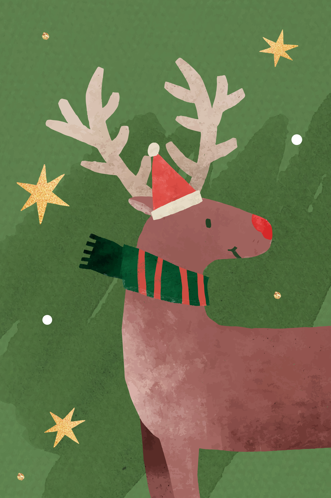

聖誕老人
聖誕老人源自西方傳說，是一位住在北極、留著白鬍子、穿著紅衣的大胖爺爺。他乘著由 馴鹿拉的雪橇，在平安夜悄悄造訪世界各地，從煙囪進入家中，將禮物放在乖孩子的襪子裡，並吃掉孩子們 為他留下的食物。他在一年中的其他時間里，都是忙於製作禮物和監督孩子們的行為。


馴鹿
聖誕馴鹿起源於北歐的馴鹿文化，因為馴鹿在雪地是重要的交通夥伴。牠們在 1823 年的詩〈聖尼古拉來訪記〉中首次成為 拉雪橇的角色，後來 1939 年又加入最有名的紅鼻子馴鹿「魯道夫」。如今，聖誕馴鹿象徵著引領雪橇、送禮物與聖誕節的魔法氣氛。

小精靈
聖誕節小精靈是住在北極、幫聖誕老人工作的神祕小幫手。通常被描繪成綠衣服、尖帽子、尖耳朵的小個子，性格調皮但很努 力工作。他們負責做玩具、照顧馴鹿、整理願望清單，是聖誕老人的最佳團隊。